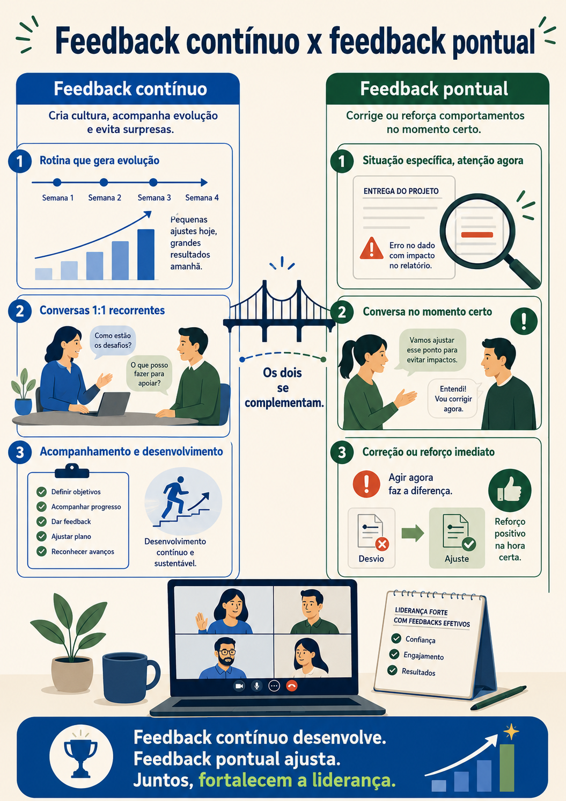
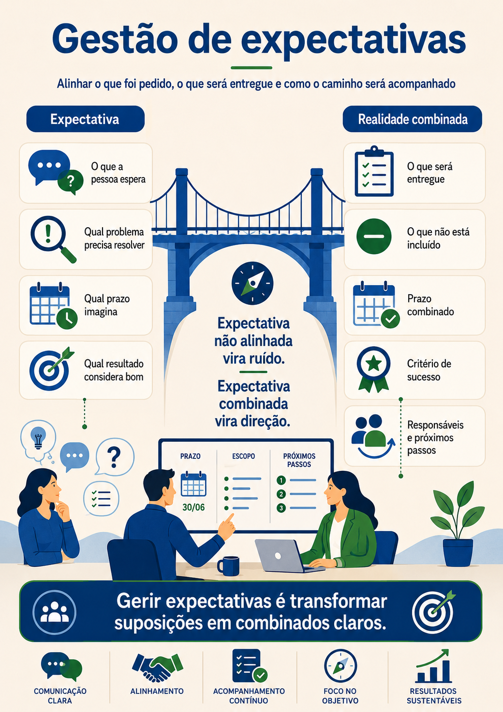
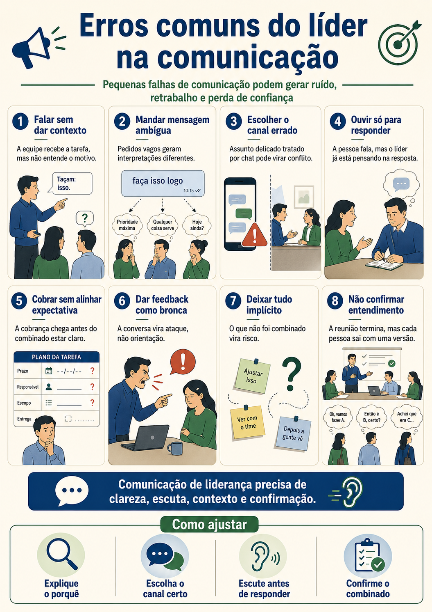

Reuniões, alinhamentos e tecnologia a favor da clareza
Uma conversa sobre convites bem feitos, expectativa, condução, fechamento, registro, Teams, IA e combinados que evitam retrabalho.
Bom dia, pessoal. Pensa em uma pessoa que passa o dia inteiro pulando de reunião em reunião. Quando termina, ela trabalhou muito, falou muito, ouviu muito, mas não sabe exatamente o que foi decidido. A pauta ficou aberta, ninguém registrou o combinado, algumas pessoas entenderam uma coisa e outras entenderam outra. No dia seguinte, começa o retrabalho.
Reunião não é sinônimo de alinhamento. Uma reunião só vira alinhamento quando as pessoas saem dela com entendimento comum. O que foi decidido? Quem faz o quê? Até quando? Qual pendência ficou aberta? Qual risco precisa ser acompanhado? Sem isso, a reunião pode virar apenas conversa.
Uma reunião bem conduzida começa antes da reunião. O convite já comunica. Se a pessoa recebe um convite com título genérico, sem objetivo, sem contexto e sem pauta, ela chega ansiosa ou despreparada. É como receber uma mensagem dizendo: amanhã quero falar com você. A pessoa pode passar o dia tentando adivinhar se é algo bom, ruim ou urgente.
O convite precisa explicar o motivo do encontro, os assuntos principais, o que precisa ser decidido e se alguém deve levar alguma informação. Isso não precisa virar texto enorme. Pode ser simples e claro.
A Arte da Facilitação, use como repertório para preparar encontros melhores, com objetivo, participação, condução e fechamento.
Quando a reunião começa, a abertura define o tom. Abertura não é enrolação. É dizer por que estamos ali, qual será a sequência da conversa e qual resultado precisa sair. Em uma reunião curta, isso pode levar um minuto. Esse minuto economiza muito tempo depois.
Durante a condução, alguém precisa proteger o foco. Proteger o foco não significa impedir participação. Significa perceber quando a conversa saiu do objetivo e trazer de volta com respeito. Uma frase útil é: esse ponto é importante, mas não parece ser a decisão de agora. Vamos registrar para tratar depois.
Essa técnica é conhecida como parking lot. Em português, podemos chamar de estacionamento de temas. É um espaço para guardar assuntos importantes que apareceram, mas que não cabem naquele momento. A ideia não é ignorar. É não deixar que a reunião perca o caminho.
Se for urgente, ele não deve ficar estacionado sem dono. A pessoa que conduz pode dizer: isso parece urgente, então vamos fechar o ponto atual em cinco minutos e abrir esse tema com as pessoas certas. O importante é decidir conscientemente, não deixar a reunião ser puxada por qualquer desvio.
Reunião boa tem entrada, caminho e saída.
Sem saída clara, a conversa continua virando ruído depois.
O fechamento é uma das partes mais importantes. Não basta esperar o horário acabar. A pessoa que conduz precisa confirmar os combinados. Algo como: só para fechar, então, ficou combinado que Ana atualiza o backlog até hoje às 17h, Bruno valida os riscos até amanhã às 10h e o próximo checkpoint será quinta-feira. Isso reduz muito o espaço de interpretação.
Em reuniões online, existem cuidados adicionais. Microfone aberto com ruído atrapalha. Câmera ligada ou desligada precisa respeitar o contexto da empresa e da reunião. Compartilhamento de tela precisa ser conferido antes, porque a pessoa pode mostrar informação indevida sem perceber. E quem conduz precisa observar se todos estão participando ou se apenas duas pessoas dominaram a conversa.
Em reuniões híbridas, o cuidado é ainda maior. Quando parte do grupo está presencial e parte está online, quem está na sala física tende a ganhar mais espaço. A pessoa online pode virar espectadora. A facilitação precisa chamar quem está remoto, repetir perguntas que foram feitas fora do microfone e garantir que decisões não aconteçam em cochicho paralelo.

Depois da pausa, vamos falar de tecnologia. Ferramentas como Teams, transcrição e recursos internos de IA podem ajudar muito, mas não substituem a responsabilidade humana. A tecnologia registra, resume, organiza, sugere. A pessoa ainda precisa conferir, interpretar, ajustar e decidir.
Transcrever reuniões é uma prática valiosa. A transcrição cria memória. Quando alguém esquece um combinado, existe registro. Quando uma pessoa faltou, ela pode consultar. Quando precisamos gerar ata, tarefas ou resumo, a transcrição ajuda. Mas é importante respeitar regras da empresa, confidencialidade e consentimento quando necessário.
Com uma transcrição em mãos, uma ferramenta de IA pode ajudar a extrair principais pontos, decisões, pendências e tarefas. Mas existe um cuidado essencial: informação confidencial de cliente deve ser tratada com ferramenta aprovada pela empresa. Não se deve jogar conteúdo sensível em qualquer plataforma externa.
O resultado da IA depende do pedido. Se você pedir “resuma”, ela pode trazer um resumo genérico. Se pedir “extraia decisões, responsáveis, prazos e riscos citados”, o resultado tende a ficar mais útil. A clareza do prompt também é comunicação. A ferramenta responde melhor quando a pessoa sabe pedir.

Além disso, nem toda reunião precisa existir. Se o objetivo é apenas informar algo simples, talvez um e-mail bem escrito resolva. Se é alinhar uma decisão sensível, talvez uma conversa por vídeo seja melhor. Se é registrar procedimento, talvez documentação seja o caminho. Escolher reunião por padrão pode virar desperdício.
Aqui voltamos à ideia de canal. O canal precisa combinar com o objetivo. Uma decisão complexa precisa de conversa rica. Um procedimento que será consultado várias vezes precisa de registro. Um alinhamento rápido pode ser chat. Uma mensagem sensível talvez precise de voz ou vídeo. O erro comum é usar o canal mais cômodo, não o mais adequado.
Também precisamos falar de gestão de expectativa. Expectativa é aquilo que uma pessoa espera que aconteça. Se não é combinada, vira adivinhação. Em reunião, expectativa aparece em prazo, qualidade, participação, formato de entrega, nível de detalhe e responsabilidade.
Um combinado fraco seria: depois alguém vê isso. Um combinado melhor seria: Paula revisa a planilha até amanhã às 12h e sinaliza no canal do projeto se houver divergência nos dados. A diferença é que o segundo deixa claro quem faz, o que faz, quando faz e onde comunica.

Um convite de reunião é uma peça de comunicação. Ele pode acalmar ou gerar ansiedade. Pode preparar ou confundir. Pode economizar dez minutos de explicação ou criar vinte minutos de alinhamento que poderiam ter sido feitos antes. Por isso, vale tratar o convite como parte do trabalho, não como detalhe administrativo.
Uma estrutura simples para convite é: objetivo, contexto, tópicos e saída esperada. Objetivo é por que estamos reunindo. Contexto é o que a pessoa precisa saber antes. Tópicos são os assuntos. Saída esperada é o que precisa estar decidido ou alinhado ao final. Se a reunião exige preparação, diga o que cada pessoa deve levar.
A abertura da reunião deve ser curta e útil. Por exemplo: pessoal, estamos aqui para fechar a priorização da próxima sprint. Temos três pontos: revisar pendências, decidir débitos técnicos prioritários e confirmar responsáveis. Quero sair daqui com decisões registradas. Essa abertura já reduz dispersão.
A condução exige escuta e corte respeitoso. Cortar, nesse contexto, não é ser grosso. É proteger o tempo e o objetivo. Uma frase útil é: vou te interromper só para organizar, porque esse ponto é importante e merece uma conversa própria. Agora precisamos fechar a decisão do item atual.
O fechamento precisa ser falado e registrado. Muita gente acha que todos entenderam porque ninguém perguntou. Isso é perigoso. Silêncio não significa entendimento. Às vezes a pessoa ficou com dúvida, mas não quis atrasar. Por isso, frases como “só para confirmar o combinado” ajudam muito.
Também vale diferenciar ata de transcrição. Transcrição é o registro quase completo do que foi falado. Ata ou resumo executivo é a síntese do que importa: decisões, pendências, responsáveis, prazos e riscos. A transcrição é insumo. A ata é organização do insumo.

A IA pode ajudar a transformar transcrição em ata, mas precisa de revisão humana. Ferramentas podem confundir nomes, interpretar mal contexto ou marcar como decisão algo que era apenas hipótese. Quem conduz continua responsável pela versão final.
Em reuniões recorrentes, o padrão importa. Se toda reunião termina com combinados claros, as pessoas chegam mais preparadas. Se toda reunião termina sem encaminhamento, o time aprende que aquele espaço não decide nada. Cultura também se forma por repetição de reuniões.
Um ponto delicado é a reunião híbrida. Quem está presencial pode conversar antes e depois, decidir no corredor e deixar quem está remoto apenas recebendo decisão pronta. Isso quebra confiança. O facilitador precisa trazer as conversas para o espaço comum e repetir o que foi dito fora do microfone.
Também é importante não usar reunião para tudo. Se uma decisão já foi tomada e só precisa ser comunicada, talvez um texto claro baste. Se o assunto exige conflito saudável, negociação ou criação conjunta, uma reunião pode fazer sentido. Se a pessoa marca reunião porque não conseguiu escrever com clareza, talvez o problema seja a mensagem, não a falta de agenda.
Processo e comunicação caminham juntos. Processo mostra o caminho. Comunicação garante que as pessoas entendem e executam esse caminho. Sem processo, tudo depende de memória. Sem comunicação, até um bom processo pode ser mal executado.
Reflexão 25
Reescreva um convite de reunião vago. Situação: reunião com título “alinhamento” e sem pauta.
Ver uma possibilidade de resposta
Uma possibilidade: título, alinhamento do status da sprint e riscos da entrega. Objetivo, confirmar o andamento das histórias críticas, revisar riscos abertos e definir próximos passos. Pauta, status rápido, bloqueios, decisões necessárias. Resultado esperado, responsáveis e prazos registrados ao final.
Reflexão 26
Você está conduzindo uma reunião e surgiu um assunto importante fora do foco. Escreva como estacionar esse tema sem parecer que está ignorando a pessoa.
Ver uma possibilidade de resposta
Uma possibilidade: esse ponto é importante e não quero perder. Vou registrar aqui como tema separado, porque agora precisamos fechar a decisão sobre a entrega. No fim, combinamos se esse assunto vira uma nova conversa ou se já definimos um responsável.
Reflexão 27
Escreva um fechamento de reunião com três próximos passos claros.
Ver uma possibilidade de resposta
Uma possibilidade: só para fechar, ficaram três ações. Mariana atualiza o cronograma até hoje às 17h. Rafael valida os riscos técnicos até amanhã às 10h. Eu envio o resumo da reunião no canal do projeto ainda hoje. Nosso próximo checkpoint será sexta às 9h.
Reflexão 28
Pense em uma reunião que poderia ter sido outro canal. Qual canal teria sido melhor e por quê?
Ver uma possibilidade de resposta
Uma possibilidade: uma reunião apenas para informar mudança de data poderia ter sido e-mail ou mensagem no canal do projeto, porque não exigia decisão conjunta. Bastaria registrar a nova data, motivo e impacto.
Reunião boa não é a que dura muito. É a que cria clareza. Quando a pessoa prepara, conduz, fecha e registra bem, a reunião vira ferramenta de decisão e não fábrica de ruído.